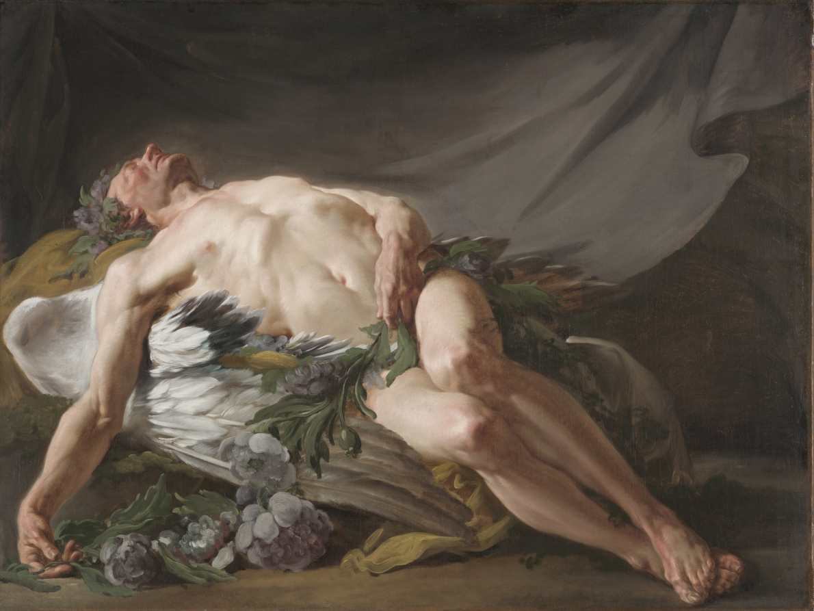
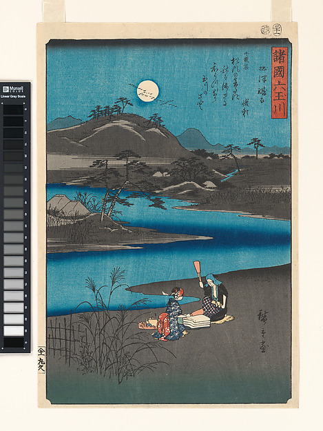
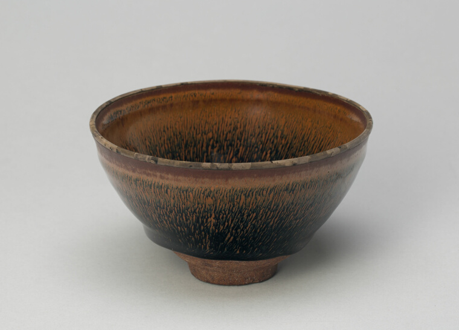
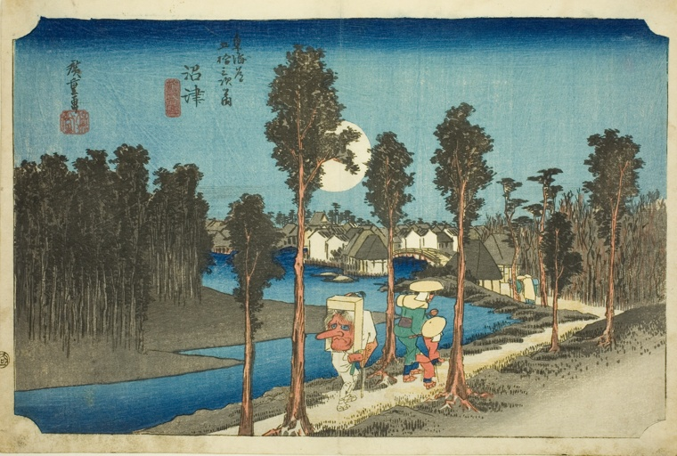

Moonless darkness stands between.
Past, the Past, no more be seen.
Gerard Manley Hopkins

somebody else is awake by the water tonight too
Utagawa Hiroshige · Six Jewel Rivers from Various Provinces, 1857 · woodblock print · The Metropolitan Museum of Art · Open Access
And the best of all ways
to lengthen our days
is to steal a few hours from the night.
Thomas Moore · The Young May Moon

the whole dark night, pooled inside one cup
Tea Bowl · China, Fujian Province · Song dynasty, 12th c. · Jian ware, "hare's-fur" glaze · Art Institute of Chicago · CC0

and if you do have to be up, walk —
the moon will keep pace
Utagawa Hiroshige (1797–1858) · Numazu—Dusk, Fifty-Three Stations of the Tōkaidō, 1831–34 · color woodblock · Art Institute of Chicago
a bower quiet for us, and a sleep
full of sweet dreams, and health,
and quiet breathing.
John Keats · Endymion